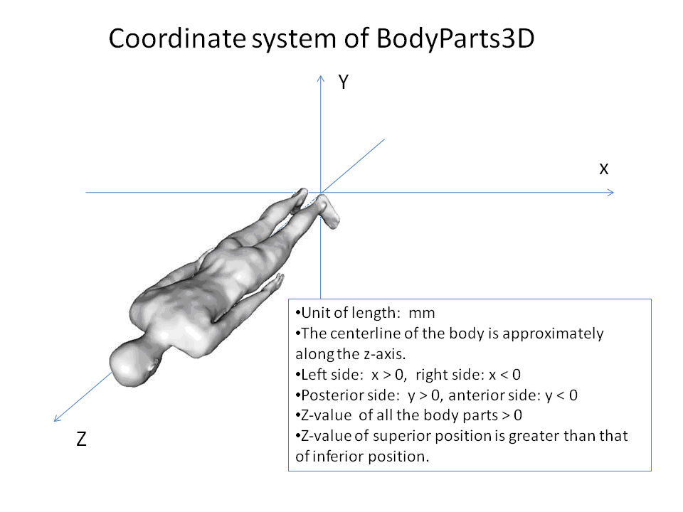

BodyParts3D Release Note (Release 3.0, 2011/6/20)
1. What's new
The following two main points have been updated since the previous version (Rel. 2.0, 2010/4/28).
- The central nervous system (so-called brain) have been refined and newly created based on the following anatomy textbooks, charts and reference atlases.
- Anatomy textbooks
- The Human Central Nervous System 4th edition [1]
- Atlas of the Human Brain, Third Edition [2]
- Gray's Anatomy: The Anatomical Basis of Clinical Practice, Expert Consult 40th edition [3]
- Prometheus Kopf, Hals und Neuroanatomie [4]
- Reference atlases
- SPL-PNL Brain Atlas 2008 March [5]
- Talairach Label Data [6]
- Inclusion relations between body parts in the conventional tree of "Bp3d Viewer" were semi-automatically generated.
- The relations are used to define a composite part that is composed of multiple parts.
For example, a part named "nervous system" is defined as a combination of a part named "central nervous system"
and "peripheral nervous system" based on a relation that the central nervous system and the peripheral nervous system are included in the nervous system.
- The relations are defined as a union of "is-a" and "part-of" relationships in Foundational Model of Anatomy (FMA) [7][8] and
the relations derived from the indentations in the list of Latest Anatomical Terms [9], which is based on Terminologia Anatomica Japonica [10].
- The hierarchy of "is-a" and "part-of" relationships in FMA [7][8] is deep. To make the height of the navigation tree as small as possible, the internal nodes are limited to body parts that are included in both FMA [7][8] and Latest Anatomical Terms [9].
The models have been refined and created in detail.
2. Attentions in use
There are some incomplete parts since BodyParts3D is being improved.
- Some parts in the release 3.0 are not contained in the release 2.0. Missing parts are not displayed
when you switch the release number in the drop-down list from 3.0 to 2.0.
- Organs might be spatially overlapped or unnecessary spaces might exist.
- Tube-shaped organs like vessels and trachea are made as solids.
- At this time BodyParts3D does not contain all the anatomical terms/concepts
in Terminologia Anatomica Japonica [10] or anatomy ontologies like FMA [7] [8] because BodyParts3D contains only organs that already have been created as 3D-models.
- Some inclusion relations can be missing or false ones can exist because they are semi-automatically generated,
3. The number of body parts (organs)
| Organ system | # of parts |
|---|
| cardinal body part | 38 |
| set of immaterial anatomical entities | 40 |
| skeletal system | 293 |
| articular system | 54 |
| muscular system | 699 |
| alimentary system | 58 |
| alimentary system/endocrine system | 1 |
| respiratory system | 18 |
| thorax | 5 |
| thorax/cardiovascular system | 2 |
| urinary system | 9 |
| genital system | 25 |
| endocrine system | 6 |
| cardiovascular system | 102 |
| lymphoid system | 6 |
| nervous system | 156 |
| sense organ system | 4 |
| integumentary system | 7 |
| Total | 1523 |
4. Coordinate system of BodyParts3D

5. Release history
- Release 3.0: 2011/6/20
- Release 2.0: 2010/4/28
- Release 1.0: 2009/2/9
6. References
1. Nieuwenhuys R, Voogd J, Huijzen, CV: The Human Central Nervous System 4th edition: Springer; 2008.
2. Mai JK, Paxinos G, Voss T: Atlas of the Human Brain, Third Edition: Academic Press; 2007.
3. Standring S: Gray's Anatomy: The Anatomical Basis of Clinical Practice, Expert Consult 40th edition: Churchill Livingstone; 2008.
4. Schünke M, Schulte E, Schumacher, Udo: Prometheus Kopf, Hals und Neuroanatomie: Thieme; 2009.
5. SPL-PNL Brain Atlas 2008 March,
http://www.spl.harvard.edu/publications/item/view/1265.
6. Talairach Label Data,
http://www.talairach.org/.
7. Rosse C, Mejino JLV: A reference ontology for biomedical informatics: the Foundational Model of Anatomy. Journal of Biomedical Informatics 2003, 36(6):478-500.
8. Foundational Model of Anatomy (subset),
http://www.obofoundry.org/cgi-bin/detail.cgi?id=fma_lite
9. Latest Anatomical Terms,
http://web.sc.itc.keio.ac.jp/anatomy/TA/TA-contents.html; 2007.
10. The Japanese Association of Anatomists: Terminologia Anatomica Japonica, 13th Edition: Igaku-shoin; 2007.